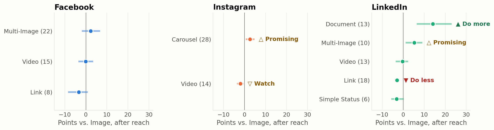
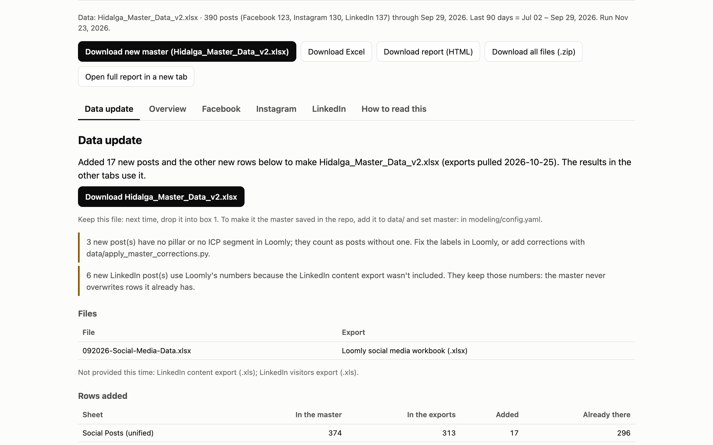
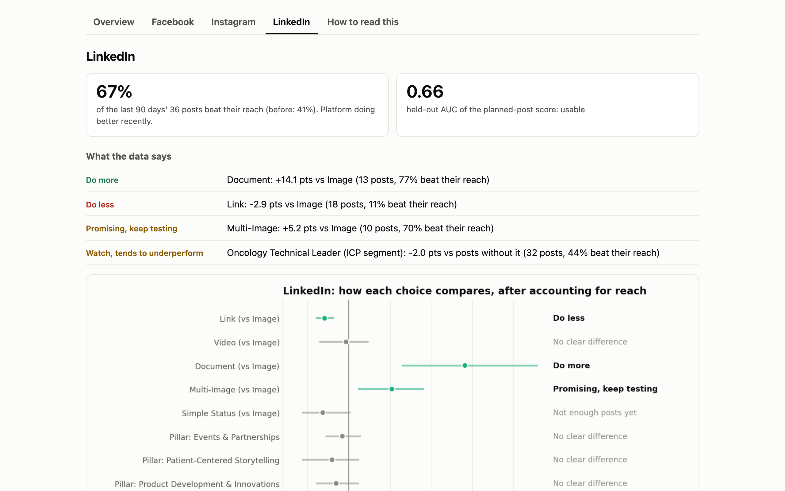

MSDS Capstone · Fall 2026 · Hidalga Technologies
Which posts work?
Data-driven content recommendations for Hidalga's LinkedIn, Instagram and Facebook, and a tool the team can rerun every month
Summary
- Data. About 35 overlapping Loomly and LinkedIn exports were combined into one versioned master workbook of 391 posts (September 2025 – September 2026) with one engagement-rate definition for every platform and complete pillar and ICP-segment tags.
- Method. Because small posts naturally have high engagement rates, every post is compared with the typical rate for its reach. Effects are tested per platform with cross-validation, bootstrap refits, sensitivity checks and corrections for multiple comparisons.
- Findings. Format is the one choice that clearly matters. LinkedIn Documents average 14 points above Image posts after reach; LinkedIn Link posts trail by 3. Content pillar, ICP segment, timing and paid boost show no detectable difference at this sample size. Facebook's recent improvement is part of a quarter-to-quarter swing on a very small audience.
- Deliverable. A web page that adds new exports to the master, reruns the analysis and reports plain verdicts (“do more”, “do less”, “keep testing”) in about 40 seconds, entirely in the browser.
1. Background and goals
Hidalga Technologies publishes on LinkedIn, Instagram and Facebook, scheduling posts in Loomly and labelling each one with a content pillar and the ICP segments it targets. The marketing team had performance numbers for every post but no reliable way to tell which choices go with better engagement: raw engagement rates mostly reflect how many people a post reached, and the data was spread across many overlapping exports.
The project had two goals:
- Find what works. For each platform, identify which choices (format, content pillar, ICP segment, posting time, LinkedIn paid boost) are associated with higher engagement once reach is accounted for, and how confident we can be.
- Hand it over. Give the team a tool they can rerun each month on new exports, with results in plain language and no data-science setup.
All results describe patterns in past posts. They are associations, not proof that a choice causes higher engagement.
2. Data
2.1 Sources
All data comes from two tools Hidalga already uses:
- Loomly (scheduling tool): the social media workbook, with one entry per Facebook, Instagram and LinkedIn post (date, time, format, title and text, labels holding the pillar and ICP segments, and engagement metrics), plus monthly follower counts and click data for Loomly short links.
- LinkedIn (company page admin exports): the content export, with LinkedIn's own numbers per post and daily page metrics, and the visitors export, with daily visitors and visitor demographics.
2.2 Building the master workbook
The roughly 35 export files were not separate datasets but repeated, overlapping pulls of the same growing accounts.
Each monthly Loomly workbook restarts at January 1, so concatenating the files would have counted most posts three to
eight times. Consolidation therefore picked the single most complete, most recent source for each record. The main
rules, documented in DATA_CLEANING_PLAN.md:
- Facebook and Instagram metrics come from Loomly. LinkedIn metrics come from LinkedIn's own content export, with Loomly's LinkedIn numbers kept alongside for comparison only. Pillar and segment tags always come from Loomly's labels.
- Older posts that predated the current tag taxonomy were tagged with keyword suggestions and then reviewed by hand; non-standard values were corrected. Every post now carries one of the four ICP segments and five pillars.
- One engagement rate for every platform: (reactions + comments + shares + clicks) ÷ impressions × 100. The exported rates used different denominators (Loomly's Instagram rate divides by reach), so they were not comparable. Instagram exports carry no clicks or shares, so platforms are analysed separately.
- Superseded files were archived, never deleted, and every merge decision was logged
(
merge_decisions.csv).
Table 1. Master workbook versions. Each version is a new file; earlier versions stay unchanged.
| Version | Source | Posts | Notes |
|---|---|---|---|
| v1 | Full consolidation of the Loomly and LinkedIn exports | 374 | Tags reviewed by hand |
| v2 | September 2026 Loomly workbook merged in | 391 | +17 posts, +3 follower months, +6 Loomly links |
| v3 | Reviewed corrections applied to v2 | 391 | 40 pillars recovered from raw labels; experiment period flagged; 100% tagged |
The current master (v3) holds 391 posts: 124 Facebook, 130 Instagram and 137 LinkedIn, from September 23, 2025 to September 29, 2026. One Facebook post with zero impressions has no rate, leaving 390 posts for analysis.
2.3 Updating the master
New exports are added with an append-only merge. The update starts from a byte copy of the current master, appends only records it does not already have, logs (but never applies) changed numbers for posts already present, then re-reads every original cell and checks the old file's hash; any difference deletes the output and stops. Any subset of the exports can be used. Without the LinkedIn content export, new LinkedIn posts fall back to Loomly's numbers, and the tool warns about it.
3. Methods
3.1 Comparing posts with their reach
Engagement rate falls as reach grows (Figure 1): a post seen by 10 people needs one reaction for a 10% rate, while a post seen by 1,000 needs a hundred. Without adjusting for this, any choice that tends to reach more people looks worse. For each platform, a cubic spline in log₂(impressions) (four knots) gives the typical rate for a post's reach. A post's lift is its rate minus that typical rate, and it beats its reach when its lift is positive.

3.2 Stage 1: models
- Unit and features. One row per post. Features: log₂(impressions) as the reach control, the four ICP segments and five pillars as 0/1 columns, format, weekend, after 11 a.m., and LinkedIn paid boost.
- Regression on engagement rate: OLS with robust (HC3) standard errors, plus ridge, lasso and elastic net, one model per platform, with a pooled model as a check.
- Classification of whether a post beats its reach: logistic (plain and penalised), decision tree and random forest. The reach curve is fitted on training posts only.
- Validation. Repeated 5-fold cross-validation (10 repeats, 50 splits) on shared splits, with penalties tuned by nested cross-validation; cross-posted content is kept in one fold.
- Trust checks. 500 bootstrap refits, permutation importance on held-out folds, five sensitivity variants, alternative labels and spline knot counts, effect sizes (Hedges' g, odds ratios, partial R²), Benjamini–Hochberg correction, and a comparison of naive and clustered standard errors for posts that target several segments.
3.3 Stage 2: verdicts
For each option (for example, Document posts on LinkedIn), the tool compares the lift of posts with that option against the baseline (Image posts for formats, posts without the option for tags), using a Welch t-test and a 2,000-sample bootstrap interval. A joint Wald test per factor comes from a regression of lift on every option with robust standard errors. Both sets of p-values are Benjamini–Hochberg adjusted. Verdicts:
- Do more / Do less: the factor and the option both pass the adjusted test at 0.05, and the verdict holds when reach is modelled with three or five knots.
- Promising / Watch: leaning one way but not settled. The tool estimates how many more posts would settle it (80% power).
- No clear difference, or Not enough posts yet (fewer than 10).
4. Results
4.1 Format matters, most clearly on LinkedIn

LinkedIn Document posts average 14 points more lift than Image posts (95% interval 6 to 23), and 77% of them beat their reach. The result holds in every check: all five sensitivity variants, 96% of bootstrap refits, every label definition and knot count, and with the experiment-period flag in the model. All 13 Documents ran between July and September 2026, so a factor specific to that period cannot be fully ruled out. LinkedIn Link posts trail Image posts by 3 points, and only 11% beat their reach. Instagram Carousel (+2.6 points) and LinkedIn Multi-Image (+5.2 points) are promising; Instagram Video tends to underperform (−2.0 points).
The exploratory analysis suggested video was the weakest format. After reach, video is no different from images on any platform: videos simply reached more people.
4.2 Pillar, segment, timing and boost show no detectable difference
Table 2. Does each factor matter? Benjamini–Hochberg adjusted p-values of joint Wald tests from a regression of lift on every option (robust standard errors). Values below 0.05 (bold) are evidence that the options within a factor differ.
| Factor | |||
|---|---|---|---|
| Format | 0.33 | 0.02 | <0.001 |
| Content pillar | 0.33 | 0.52 | 0.96 |
| ICP segment | 0.41 | 0.35 | 0.96 |
| Timing (weekend, after 11 a.m.) | 0.83 | 0.71 | 0.96 |
| Paid boost | – | – | 0.96 |
Only format passes. No pillar or segment comparison passes an adjusted ANOVA, Welch or Kruskal–Wallis test or a Tukey pair, and effect sizes are small (ω² ≤ 0.05). With about 125 posts per platform, only fairly large differences can be detected, so “no detectable difference” means pillar and segment can be chosen on strategy without giving up measurable engagement, not that they never matter. One methods finding applies throughout: naive standard errors were up to 1.8 times too small because variances differ between groups, so all tests use robust or clustered errors.
4.3 How predictable are posts?

Instagram's rate is partly predictable (R² 0.44), almost entirely through reach. Facebook's is not (R² −0.05), and LinkedIn's is close to zero on average but varies widely between splits; without a single 3-impression outlier it reaches 0.19. Whether a post beats its reach is predicted at an AUC of 0.64–0.67 on every platform. Those numbers are good enough to rank a content plan, not to promise a number for a single post, and the tool labels Facebook's planned-post scores as rough.
4.4 Facebook's recent rise is a swing, not a trend

The tool's 90-day check flagged Facebook as doing better recently (71% of recent posts beat their reach, against 38% before). Facebook's quarters run 18%, 61%, 27% and 69%. The differences between quarters are clear (joint Wald p < 0.001), but no recorded choice explains them: not format, pillar, segment or timing, and not follower growth, which rose steadily from 6 to 18. The Q2–Q3 experiment period has no effect on lift on any platform once content is in the model. With a median of 17 impressions per Facebook post, one or two interactions move a rate by 5 to 15 points. The recent rise is the latest upswing of this pattern, and the next quarter may swing back. The tool's reports now carry a caution note for Facebook.
5. The recommendation tool
The tool is a web page at graceschmidt1.github.io/MSDS-Capstone-26, hosted on GitHub Pages. Python runs inside the browser (Pyodide), so files never leave the computer and nothing needs to be installed. A monthly update takes four steps: drop in the latest master; optionally add any new Loomly or LinkedIn exports and a plan of upcoming posts; click Make recommendations (about 40 seconds); then download the new master and read the results.


The page runs the same code as the command-line version, and its results match to within 10⁻¹³. Guards built in: files that are not one of the known exports are refused with a clear message; two copies of the same export are refused; unknown post formats, untagged posts and LinkedIn posts on Loomly's numbers raise warnings; and if the exports hold nothing new, no new master is made.
6. Recommendations
Content
- Do more LinkedIn Documents.
- Do less LinkedIn Link posts; carry the link in a Document or image post instead.
- Keep testing Instagram Carousel (about 15 more posts would settle it) and LinkedIn Multi-Image.
- Choose pillar and segment on strategy; past engagement does not separate them.
- Read Facebook changes with caution until the audience is larger.
Process
- Run the tool monthly with fresh exports and keep each new master version.
- Export a new Loomly workbook each time rather than adding posts to last month's file, whose older posts carry stale numbers.
- Include the LinkedIn content export so new LinkedIn posts get LinkedIn's own numbers.
- Tag every post with a pillar and ICP segment in Loomly before it goes out.
- Score the coming month's planned posts with the plan template before the month starts.
7. Limitations and next steps
- Sample size. 390 posts, about 125 per platform; only fairly large effects can be detected. The original goal of about 550 posts was not reachable because post-level exports before September 2025 are not available.
- Association, not cause. Choices were not assigned at random. The experiment-period flag covers every post from April to September 2026, so it cannot be told apart from a time trend over the same months.
- Truncated text. Post text in the exports is cut at 200 characters, so post length and calls to action cannot be tested.
- Instagram metrics lack clicks and shares, so Instagram rates are not directly comparable with the other platforms.
Next steps, in order of value: a planned format test (for example, alternating Document and Image posts on matched topics for a quarter) to move from association to cause; full post text from Loomly to test length and calls to action; day of week, posting hour and number of segments as features; and linking Loomly click data to individual posts.
8. Reproducibility
- All code is in the public repository: data scripts in
data/, models and the tool inmodeling/, the web page inindex.htmlandsite/, and analysis notebooks innotebooks/. Pinned package versions are inrequirements.txt. - Every run writes a versioned folder (
outputs/runs/<date>_<tag>/) recording the master file's SHA-256 hash, the git commit, the configuration, package versions and the random seed (26). Reruns are byte-identical. - 232 automated tests cover the data pipeline, models, verdicts and web page.
- Every result is logged in
FINDINGS.mdwith the run and commit that produced it; data decisions are inDATA_CLEANING_PLAN.mdanddata/merge_decisions.csv. - Figures in this report come from
presentation/make_figures.py, using runs2026-11-17_recommendations(Figure 2, Table 2) and2026-11-04_eval_framework(Figure 3), and the v3 master (Figures 1 and 4).